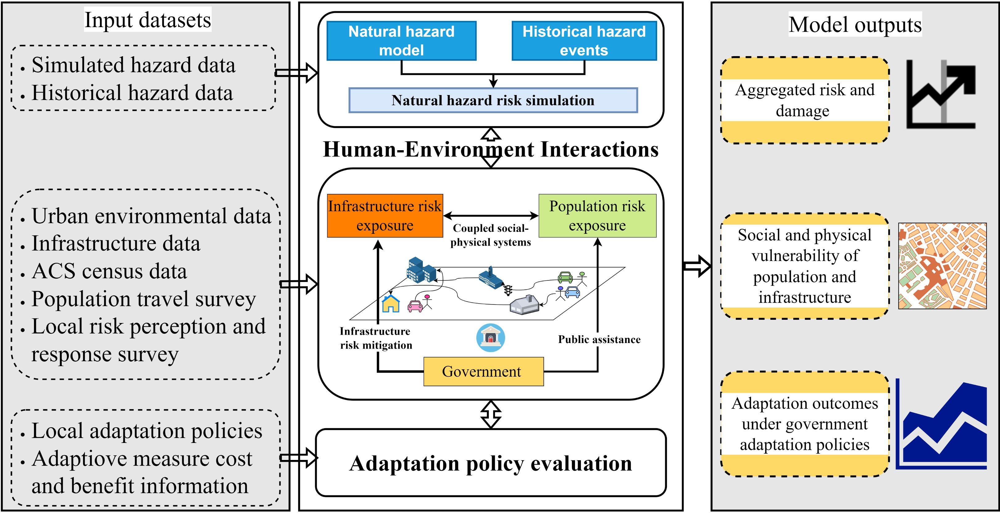
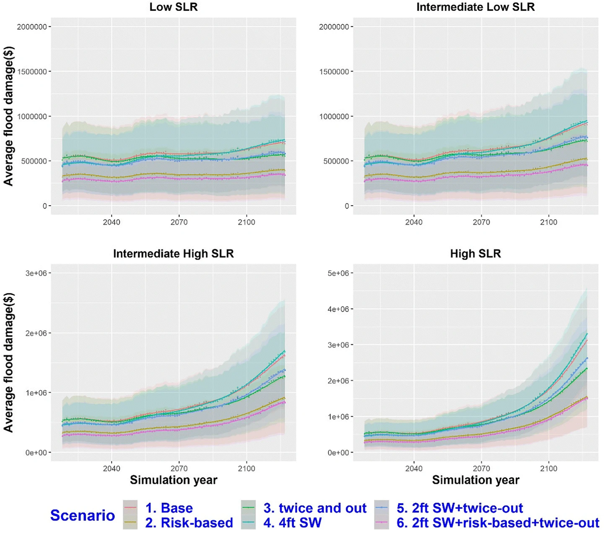
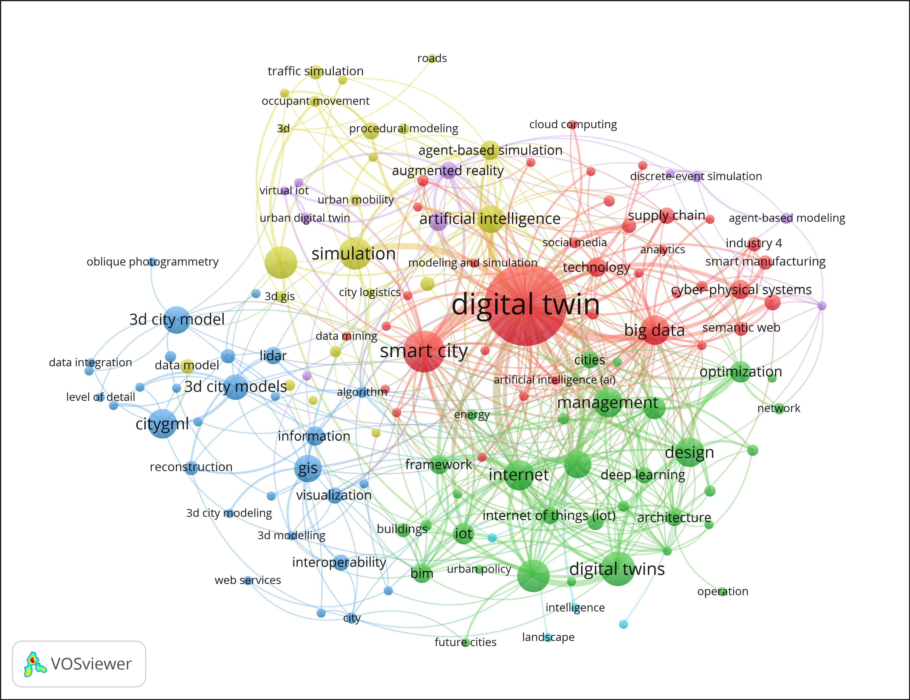
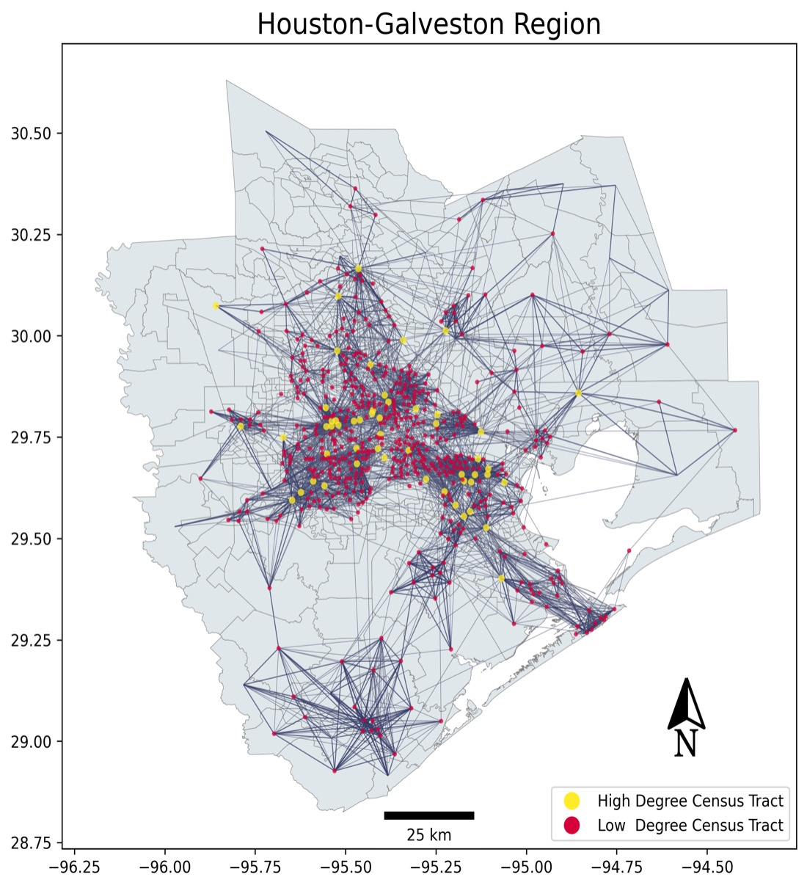

With future projections of both population growth and climate change, exposure to environmental hazards and subsequent risks and vulnerabilities are only expected to increase. Urban environments are complex social and physical systems that are susceptible to these changes. Urban dwellers, as active components of cities, are exposed to both extreme events like extreme heat, drought, flooding, and hurricanes, as well as slow-onset environmental changes such as sea level rise, land subsidence, global warming, and changing patterns of exposure. These conditions often lead to compound and cascading hazards (CCHs), where multiple events either overlap in space and time or trigger a chain reaction of impacts across systems. Due to a lack of understanding the risks and impacts associated with these natural disasters, they pose new challenges for governments at all levels in developing adaptation policies and disaster risk reduction strategies. Therefore, this requires a shift in focus from managing isolated disastrous impacts to assess the combined effects of natural hazards under the interconnedted natural, social, and ecological systems. My research develops and applies data-driven techniques and micro-level urban simulation models to integrate different components of the built environment to explore interactions between social and natural systems under the compound effects of natural hazards and climate change and facilitate community adaptation decision-making.
1. Geoinformation for Natural Hazard Risk Assessment in Natural-Human Systems
Catastrophic natural disasters present formidable challenges to build resilient communities. Although direct losses of natural hazards are extensively documented and open tools are available for risk assessment for single hazard, indirect impacts of natural hazards stemming from the system interdependencies within and between natural and human systems are often less explored or underestimated. Cascading risks from natural disasters are implicitly defined as shocks in a subsystem that trigger systemic risk that was propagated to other subsystems. These cascading effects arise due to alterations in the spatial and temporal patterns of natural hazards, variations in human exposure, shifts in supply and demand relations, trade flows, and other factors, all manifesting through human activities and impacts on the linear infrastructure systems. Utilizing available open data and geoinformation techniques, I develop agent-based models, computational methods, and open tools to quantify the impacts of natural disasters, including floods, hurricane storm surges, and landslides. My research aims to pioneer the development of a systemic risk framework and tools that are capable of measuring impacts of natural hazards under climate change and human exposure changes.
2. Evaluation of Alternative Adaptation Policies and Strategies under Climate Change, Land Use Change, and Population Change
Climate-driven extreme events present multifaceted challenges to a society and require proper adaptation planning. Controlling and reducing natural hazard impacts is a prominent issue around the world, and this concern is growing with further urbanization and continued population increase. I utilize interdisciplinary approaches, multi-sourced datasets, and tools to explore the cross-sectoral impacts of extreme events under various climate scenarios. I conduct scenario analysis to assess the effectiveness of various adaptation policies using simulation approaches based on machine learning and artificial intelligence (AI). This research is crucial for identifying strategies that can reduce community vulnerability and bolster resilience in the face of climate change, thereby informing policymakers and stakeholders in crafting informed adaptation frameworks.
3. Social-Centric Urban Digital Twins to Promote Community Resilience
Motivated by the essential need to visually represent extensive spatial-temporal data across vertical dimensions for informed decision-making, the digital twin technology has emerged as a pivotal innovation to seamlessly merging data, analytical models, and decision-making processes. The concept of urban digital twin goes beyond traditional physical simulations, by creating a dynamic virtual replica of the real urban environment. It effectively captures city evolutions under diverse social and environmental conditions. In our ongoing research, we have constructed a web-based urban digital twin model for coastal resilience assessment. Utilizing Python to integrate various open-source techniques, the developed model facilitates resilience planning through a participatory approach. I will continue developing social-centered urban digital twins that integrate multi-source datasets and models. This integrated model will facilitate measuring and enhancing community resilience, providing a dynamic tool for disaster risk management, thereby fostering more resilient communities.
4. Urban Data Science for Social Goods
I leverage cutting-edge concepts, methods, and tools steming from computer sicence, spatial statistics, and urban planning to tackle urban environmental isuues and promote social resilience. This research focuses on extracting actionable insights from large volumes of urban data using data science techniques to support urban planning and management. We focues on developing new geospatial methods, models, and tools that deal with data collection, processing, visualizing, and analyzing in urban and rural areas, which can be pivotal in addressing and solving key social issues within urban settings.